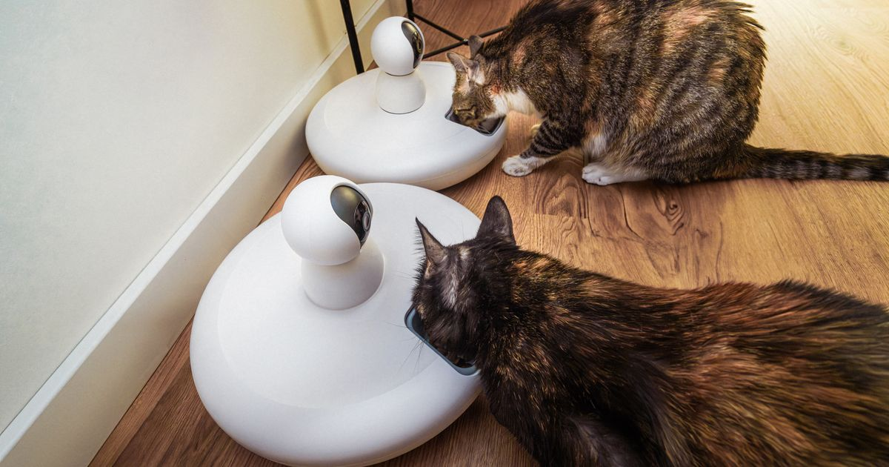

Um comedouro automático libera porções programadas de ração em horários definidos, permitindo alimentar cães e gatos mesmo quando o tutor está fora de casa. Esse é o resumo direto — mas escolher o modelo certo depende de fatores que vão muito além disso: capacidade, conectividade Wi-Fi, tipo de alimento suportado e o comportamento do próprio pet.
Este guia reúne o que você precisa saber antes de comprar: como o dispositivo funciona, os tipos disponíveis no mercado brasileiro, faixas de preço reais no Mercado Livre e quando o investimento compensa.
Key Takeaways
- Comedouros automáticos no Mercado Livre partem de cerca de R$ 28 e passam de R$ 300 em modelos com Wi-Fi, câmera e app (Mercado Livre — Comedouro Automático, retrieved 2026-08-20).
- O mercado pet brasileiro faturou R$ 77,96 bilhões em 2025 e projeta crescimento de 9,6% em 2026, com tecnologia de gestão e alto valor agregado entre as tendências do setor (ABINPET via Editora Stilo, 2025).
- Modelos com app Wi-Fi permitem programar porções remotamente, mas dependem de conexão estável — o principal ponto de reclamação nesse segmento.
- Nem todo pet se adapta bem à troca da rotina de alimentação; a transição deve ser gradual.
- Coleiras com GPS, câmeras e alimentadores automáticos deixam de ser curiosidade e ganham espaço nas casas brasileiras como parte da tendência de tecnologia de conveniência do setor pet em 2026 (PetBR, retrieved 2026-08-20).
Um comedouro automático é um dispensador de ração com um compartimento de armazenamento, um mecanismo motorizado e um temporizador programável. Nos horários definidos, o motor libera a quantidade de ração configurada diretamente no pote.
Os modelos mais simples usam apenas um timer mecânico ou digital embutido no próprio aparelho, sem depender de internet. Já os modelos avançados se conectam a um aplicativo via Wi-Fi ou Bluetooth, permitindo ajustar horários e porções remotamente, gravar mensagens de voz para chamar o pet na hora da refeição e, em alguns casos, monitorar o consumo por câmera.
como configurar o app de um comedouro Wi-Fi
Programação feita direto no painel do aparelho, geralmente 1 a 4 refeições por dia. É a opção de entrada, mais barata e com menos pontos de falha (não depende de Wi-Fi).
Controle remoto pelo celular, histórico de alimentação, ajuste fino de porções e notificações. Exige rede Wi-Fi estável em casa — instabilidade de conexão é a reclamação mais comum nesse tipo de produto, segundo comparativos do setor. Se ainda está em dúvida se vale o investimento, veja o comparativo comedouro automático com ou sem Wi-Fi.
Além da programação remota, permite ver e, em alguns modelos, falar com o pet durante a refeição pelo próprio app.
Menos comum e geralmente com refrigeração ou gelo reutilizável, voltado a rações úmidas ou pastosas que estragam fora da geladeira — segmento de nicho, mas relevante para gatos com restrições alimentares.
melhores comedouros automáticos para cachorro
melhores alimentadores automáticos para gatos
| Tipo | Preço aproximado | Depende de Wi-Fi | Melhor para |
|---|---|---|---|
| Timer simples | A partir de R$ 28 | Não | Rotina fixa, orçamento apertado |
| App e Wi-Fi | Faixa intermediária a alta | Sim | Controle remoto, horários variáveis |
| Com câmera | Faixa mais alta | Sim | Monitorar o pet à distância |
| Ração úmida | Nicho, valor variável | Depende do modelo | Gatos com restrição alimentar |
Os preços no Mercado Livre variam bastante conforme os recursos do aparelho. Modelos de timer simples partem de cerca de R$ 28, enquanto versões completas com Wi-Fi, câmera e controle por app costumam ultrapassar R$ 300 (Mercado Livre — Comedouro Automático, retrieved 2026-08-20). Entre essas duas pontas, a faixa intermediária — timer digital com maior capacidade (3-4L) e gravação de voz, sem câmera — concentra boa parte da demanda.
Antes de comprar, vale conferir o selo "Mais Vendido" da subcategoria no próprio Mercado Livre e o número de vendas exibido no anúncio: são os indicadores públicos mais confiáveis de que aquele modelo específico tem histórico consistente de satisfação, complementando as avaliações.
Fisicamente, muitos comedouros automáticos servem para ambas as espécies — a diferença real está no ajuste da porção e no formato do pote. Cães de porte maior costumam precisar de compartimentos com capacidade maior (4L ou mais) e porções configuráveis em quantidades maiores. Gatos, por comerem porções menores e com mais frequência ao longo do dia, se beneficiam de programações com mais refeições (4-6x) em quantidades reduzidas.
comedouro automático gato x cachorro — diferença detalhada
Depende da rotina do tutor. Para quem passa longos períodos fora de casa ou tem horários irregulares, o comedouro automático resolve um problema real: evita jejum prolongado ou superalimentação por compensação quando o tutor volta. Para quem já está em casa na maior parte do dia, o benefício é menor e pode não justificar o investimento em modelos mais caros.
vale a pena um comedouro automático — prós, contras e preço
Não. Comedouro e bebedouro automático resolvem problemas diferentes — ração e água — e muitos tutores optam pelos dois equipamentos, ou por kits combinados vendidos como um único produto.
melhor bebedouro automático para pet
A instalação de um comedouro automático costuma levar poucos minutos: encher o reservatório, definir a hora atual no painel (ou parear com o app, nos modelos Wi-Fi) e programar os horários. Alguns cuidados reduzem falhas e problemas de saúde do pet:
Quem viaja com frequência também deve considerar a adaptação do pet ao equipamento com antecedência — veja como preparar o pet para usar o comedouro automático em viagens sem estranhar o novo horário de alimentação.
Nossa leitura do mercado: ao cruzar o selo "Mais Vendido" de cada subcategoria do Mercado Livre com os comparativos técnicos disponíveis publicamente, um padrão se repete — os modelos mais bem avaliados não são necessariamente os mais caros, e sim os que documentam claramente a capacidade real do reservatório e o tipo de motor (evitando reclamações de porção inconsistente). Isso reforça a recomendação de conferir avaliações específicas do modelo, não apenas a categoria de preço.
O comedouro automático é hoje um dos gadgets pet mais buscados no Mercado Livre, refletindo um mercado brasileiro em expansão e cada vez mais orientado à tecnologia de conveniência (ABINPET via Editora Stilo, 2025). Antes de comprar, defina se você precisa apenas de um timer simples ou dos recursos extras de um modelo com app — e confira os reviews específicos de cada categoria abaixo.
melhor comedouro automático para cachorro — os mais vendidos
Escrito pela Equipe Smart Pet Gadgets, redação especializada em comparativos de produtos pet no mercado brasileiro. Veja nossa política editorial e como verificamos as fontes citadas neste artigo.
🐾 Confira o preço e a disponibilidade atual no Mercado Livre.
Ver no Mercado Livre →Link de afiliado: podemos receber uma comissão por compras feitas através deste link, sem custo adicional para você.
Sim, modelos com timer simples (sem app) funcionam de forma totalmente independente de Wi-Fi ou Bluetooth — a programação é feita direto no painel do aparelho.
Para gatos e cães pequenos, 2L costuma ser suficiente para alguns dias de ração. Para cães de porte médio a grande, o ideal são modelos de 4L ou mais, para reduzir a frequência de reabastecimento.
É raro em modelos com selo de segurança e sensor anti-obstrução, mas vale evitar aparelhos muito baratos sem essa proteção, especialmente em residências com mais de um pet disputando o pote.
Nildo Alves — curadoria de produtos pet no Smart Pet Gadgets. Testa e pesquisa produtos para cães e gatos, cruzando especificações de fabricante com boas práticas veterinárias e dados de mercado.
Sobre o Smart Pet Gadgets · Contato · Política editorial e de afiliados